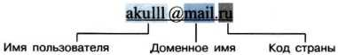
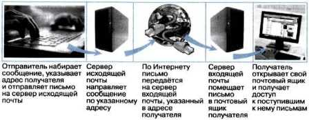

Основы электронной почты
Электронная почта (e-mail) — это система обмена сообщениями между абонентами компьютерных сетей. Она имеет ряд преимуществ перед обычной почтой, а именно:
- высокую скорость пересылки сообщений;
- возможность пересылки кроме текстовых документов прикреплённых файлов, содержащих графику, звук и др.;
- возможность одновременной рассылки письма сразу нескольким адресатам.
Электронная почта является одной из основных служб Интернета. Любой пользователь Интернета может завести свой почтовый ящик, который представляет собой поименованную область дисковой памяти на почтовом сервере провайдера. Пользователь получает адрес электронной почты, который имеет вид: имя_пользователя@имя_сервера.
Схема работы электронной почты:
Для работы электронной почты используются два протокола:
- SMTP (Simple Mail Transfer Protocol) — для отправки почты;
- POP3 (Post Office Protocol 3) — для приёма почты.
Протокол SMTP не требует идентификации отправителя, а протокол POP3 обеспечивает проверку получателя по логину и паролю.
Просматривать сообщения электронной почты можно через почтовые клиенты или веб-интерфейс.
Популярные почтовые клиенты:
- Microsoft Outlook Express
- Mozilla Thunderbird
Пример почтовой службы: mail.ru — крупнейшая в России система электронной почты.
Многие пользователи предпочитают мгновенный обмен сообщениями. Skype позволяет обмениваться текстовыми сообщениями, использовать голосовую связь и видеозвонки.